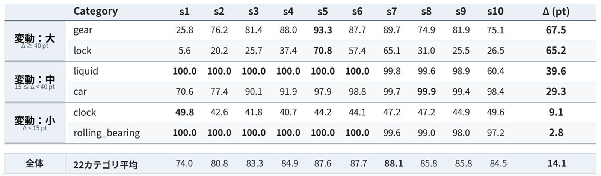

Temporal Scale in Video Anomaly Detection
製品作動動画の異常検知における時間スケールの役割
Phys-AD（CVPR 2025）は、製品を動作させた 22 カテゴリの動画データセットで、外観は正常でも作動が不自然な異常を、正常動画のみの学習で検出することが求められる。本研究は、過去フレームから未来フレームを予測し、その予測誤差を異常スコアとする手法を基盤にしている。
異常の種類によって、有効な時間スケール（予測するフレーム間隔 = stride）は変わるのか？
Does the effective temporal scale depend on the type of anomaly?
- 本人の貢献
- 既存手法の再現と交絡要因の切り分け、仮説・検証計画の設計、stride 感度の実験、TDBAD の着想・実装・評価
- 主な結果
- 最適な stride はカテゴリによって大きく異なった（H1 と整合）。TDBAD は同条件の固定 stride 5 に対し +0.85pt（探索的な結果）
- 限界
- H2（相補性）は未検証。設定の一部をテスト結果を見たあとに決めており、他手法との公平な比較は未実施
出発点：既存手法の再現で見えた問題
研究室の既存手法の再現研究室の先行研究の手法 Multi-Mah（複数の stride で学習した MNAD の異常スコアを統合する手法）を、Phys-AD の全テストデータで再現し、22 カテゴリ平均 AUROC 87.74% を確認した。しかし、この性能が「stride を変えた効果」「複数モデルのアンサンブル」「スコア統合」のどれによるものかは切り分けられていなかった。ここが自身の研究の出発点である。
87.74% は研究室の既存手法を再現した値であり、自身の提案手法の成果ではありません。
仮説と検証計画
自身の研究設計検証の前に、仮説ごとに結果に応じた次の打ち手を決めた（図1）。

H1 の検証：stride 感度の比較
自身の実験MNAD の Memory モジュールの影響を除くため、予測誤差だけを異常スコアとする単純な Encoder–Decoder 型の予測モデルを構成し、stride 1〜10 を同じ条件で比較した。

結果：22 カテゴリ平均の最高は stride 7 の 88.1% だったが、最適な stride はカテゴリによって大きく異なり、gear や lock では stride によって AUROC が 65pt 以上変動した。単一の stride では対応しきれない可能性を示しており、H1 と整合する。ただし学習 seed によるばらつきとの切り分けは継続中で、H1 の検証は完了していない。
考察の一例：lock の「詰まり」異常では、stride 1 だと停止した状態まで予測できて誤差が出にくい一方、より先を予測する stride 5 では正常な動作との差が誤差に現れた。少数事例の定性的な観察にもとづく解釈である。
H2 に向けた試作：TDBAD
自身の着想・試作Temporal Discrepancy-Based Anomaly Detection. stride ごとの異常スコアが大きく食い違うときは、一部の時間スケールだけが異常を捉えている可能性がある。そこで、stride 1〜6 のスコアを正常データを基準に同じ尺度へ揃え、スケール間の食い違いの大きさに応じて、フレームごとに参照するスコアを切り替える手法を試作した。

同条件（同一の予測モデル、Phys-AD 22 カテゴリ平均 AUROC）でのスコア算出方法の比較。値は学習 seed 1 回分。
- 改善幅は +0.85pt と小さく、lock（+6.7pt）や button（+7.0pt）など一部カテゴリに集中している。rubber_band のようにわずかに低下したカテゴリもある。学習 seed を変えた 3 回の評価でも、改善の向きは同じだった。
- 比較対象の固定 stride 5 と TDBAD の設定の一部は、テスト結果を見たあとに選んでいる。テストデータが使えない本来の設定ではそのまま適用できないため、現時点では探索的な結果である。
- H2 の検証ではない。単純な統合（平均・最大）は固定 stride 5 を上回らず、相補性が成り立つ条件はまだ分かっていない。
- 図2 の 88.1% とは実験設定が異なるため、直接は比較しない。他手法との条件を揃えた比較はまだ行っておらず、既存手法に対する優位性は主張しない。
次の課題
- 学習 seed の影響を切り分け、H1 の検証を完了させる
- H2（時間スケール間の相補性）を、手法の性能とは独立に検証する
- 手法の設定を、テスト情報を使わずに決める設計にする
- 他手法と比較条件を揃えて評価する
Related work: MNAD (CVPR 2020) · Phys-AD (CVPR 2025)